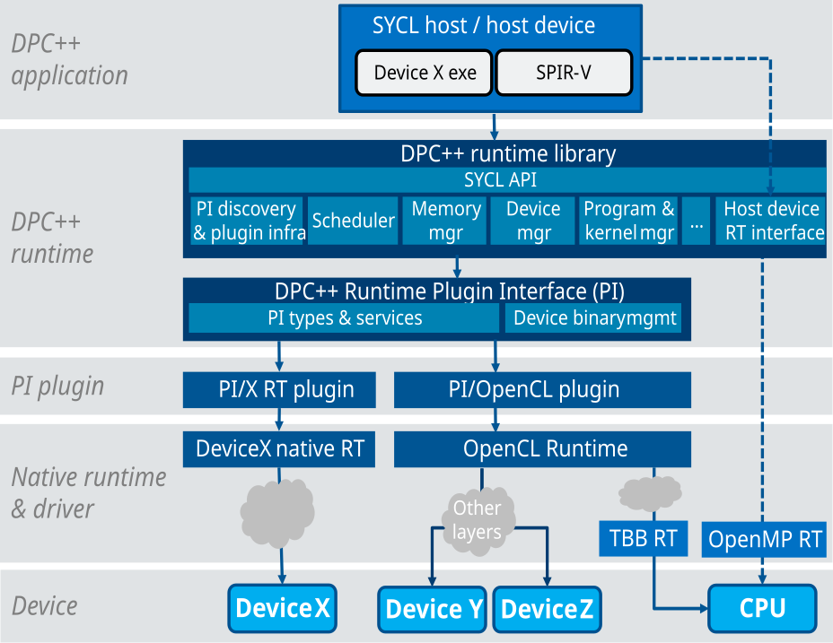
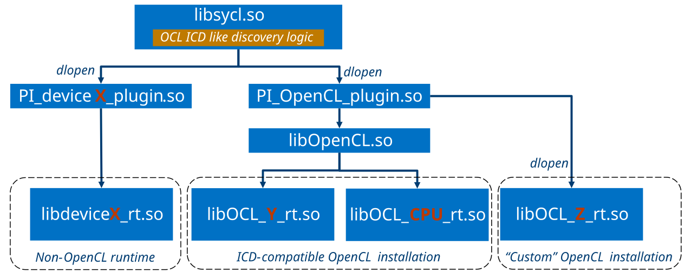

The DPC++ Runtime Plugin Interface.¶
Overview¶
The DPC++ Runtime Plugin Interface (PI) is the interface layer between device-agnostic part of the DPC++ runtime and the device-specific runtime layers which control execution on devices. It employs the “plugin” mechanism to bind to the device specific runtime layers similarly to what is used by libomptarget or OpenCL.
The picture below illustrates the placement of the PI within the overall DPC++ runtime stack. Dotted lines show components or paths which are not yet available in the runtime, but are likely to be developed.

The plugin interface and the discovery process behind it allows to dynamically plug in implementations based on OpenCL and “native” runtime for a particular device – such as OpenCL for FPGA devices or native runtimes for GPUs. Implementations of the PI are “plugins” - dynamic libraries or shared objects which expose a number of entry points implementing the PI interface. The DPC++ runtime collects those function pointers into a PI interface dispatch table - one per plugin - and uses this table to dispatch to the device(s) covered by the corresponding plugin.
PI is based on a subset of OpenCL 1.2 runtime specification, it follows its platform, execution and memory models in all aspects except those explicitly mentioned in this document. A part of PI API types and functions have exact matches in OpenCL. Whenever there is such a match, the semantics also fully matches unless the differences are explicitly specified in this document. While PI has roots in OpenCL, it does have many differences, and the gap is likely to grow, for example in the areas of memory model and management, program management.
Discovery and linkage of PI implementations¶

Device discovery phase enumerates all available devices and their features by querying underlying plugins found in the system. This process is only performed once before any actual offload is attempted.
Plugin discovery¶
Plugins are physically dynamic libraries stored somewhere in the system where the DPC++ runtime runs. TBD - design and describe the process in details.
Plugin binary interface¶
TBD - list and describe all the symbols plugin must export in order to be picked up by the DPC++ runtime for offload.
OpenCL plugin¶
OpenCL plugin is a usual plugin from DPC++ runtime standpoint, but its loading and initialization involves a nested discovery process which finds out available OpenCL implementations. They can be installed either in the standard Khronos ICD-compatible way (e.g. listed in files under /etc/OpenCL/vendors on Linux) or not, and the OpenCL plugin can hook up with both.
TBD describe the nested OpenCL implementation discovery process performed by the OpenCL plugin
Device enumeration by plugins¶
TBD
PI API Specification¶
PI interface is logically divided into few subsets:
Core API which must be implemented by all plugins for DPC++ runtime to be able to operate on the corresponding device. The core API further breaks down into
OpenCL-based APIs which have OpenCL origin and semantics
Extension APIs which don’t have counterparts in the OpenCL
Interoperability API which allows interoperability with underlying APIs such as OpenCL.
See pi.h header for the full list and descriptions of PI APIs. [TBD: link to pi.h doxygen here]
The Core OpenCL-based PI APIs¶
This subset defines functions representing core functionality, such as device memory management, kernel creation and parameter setting, enqueuing kernel for execution, etc. Functions in this subset fully match semantics of the corresponding OpenCL functions, for example:
piKernelCreate
piKernelRelease
piKernelSetArg
The Extension PI APIs¶
Those APIs don’t have OpenCL counter parts and require full specification. For example, the function below selects the most appropriate device binary based on runtime information and the binary’s characteristics
pi_result piextDeviceSelectBinary(
pi_device device,
pi_device_binary * binaries,
pi_uint32 num_binaries,
pi_device_binary * selected_binary);
PI also defines few types and string tags to describe a device binary image.
Those are used to communicate to plugins information about the images where it
is needed, currently only in the above function. The main
type is pi_device_binary, whose detailed description can also be found
in the header. The layout of this type strictly matches the layout of the
corresponding device binary descriptor type defined in the
clang-offload-wrapper tool which wraps device binaries into a host
object for further linkage. The wrapped binaries reside inside this descriptor
in a data section.
The Interoperability PI APIs¶
These are APIs needed to implement DPC++ runtime interoperability with underlying “native” device runtimes such as OpenCL. Currently there are only OpenCL interoperability APIs, which is to be implemented by the OpenCL PI plugin only. These APIs match semantics of the corresponding OpenCL APIs exactly. For example:
pi_result piclProgramCreateWithSource(
pi_context context,
pi_uint32 count,
const char ** strings,
const size_t * lengths,
pi_program * ret_program);
PI Extension mechanism¶
TBD This section describes a mechanism for DPC++ or other runtimes to detect availability of and obtain interfaces beyond those defined by the PI dispatch.
TBD Add API to query PI version supported by plugin at runtime.